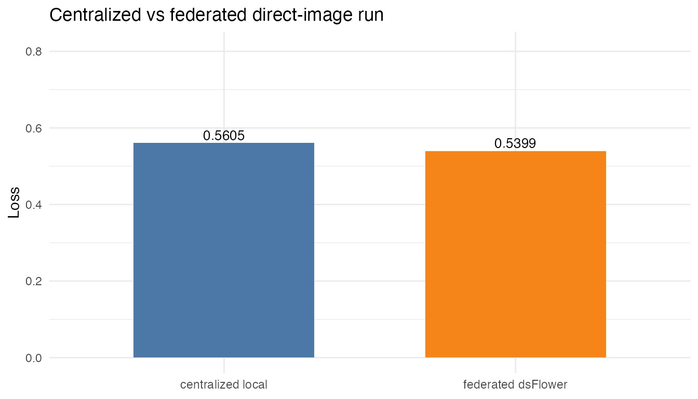

Direct Image ResNet Demo
direct-image-resnet.Rmd
knitr::opts_chunk$set(collapse = TRUE, comment = "#>")
live <- identical(tolower(Sys.getenv("DSFLOWER_RENDER_LIVE_VIGNETTES")), "true")
`%||%` <- function(x, y) {
if (is.null(x) || length(x) == 0 || (length(x) == 1 && is.na(x))) y else x
}
cat("Live Opal/DataSHIELD execution:", live, "\n")## Live Opal/DataSHIELD execution: FALSEThis vignette is a complete direct-image dsFlower run. It creates synthetic PNG images on the client machine, copies each site’s files into the matching Rock container, uploads only metadata tables to Opal, trains a centralized local PyTorch ResNet-18 baseline, and then trains the federated ResNet-18 template through DataSHIELD and Flower.
The local Docker copy is only for this vignette. In a production
dsImaging deployment, the same metadata table points to
image files already visible to Rock through the imaging store, a shared
filesystem, or an object-storage mount.
1. Configure The Three DataSHIELD Nodes
opal_urls <- trimws(strsplit(Sys.getenv(
"DSFLOWER_OPAL_URLS",
"https://localhost:8443,https://localhost:8444,https://localhost:8445"
), ",", fixed = TRUE)[[1]])
opal_user <- Sys.getenv("OPAL_USER", "administrator")
opal_password <- Sys.getenv("OPAL_PASSWORD", "admin123")
opal_project <- Sys.getenv("DSFLOWER_DEMO_PROJECT", "dsflower_demo")
table_prefix <- paste0("vignette_direct_image_", format(Sys.time(), "%Y%m%d%H%M%S"))
n_sites <- length(opal_urls)
n_per_site <- as.integer(Sys.getenv("DSFLOWER_IMAGE_DEMO_N_PER_SITE", "4"))
image_size <- as.integer(Sys.getenv("DSFLOWER_IMAGE_DEMO_IMAGE_SIZE", "64"))
local_root <- Sys.getenv(
"DSFLOWER_IMAGE_DEMO_LOCAL_ROOT",
file.path(tempdir(), "dsflower_direct_image_demo")
)
server_root <- Sys.getenv(
"DSFLOWER_IMAGE_DEMO_SERVER_ROOT",
"/tmp/dsflower_direct_image_demo"
)
containers <- trimws(strsplit(Sys.getenv(
"DSFLOWER_IMAGE_DEMO_DOCKER_CONTAINERS",
paste0("opal", seq_len(n_sites), "-rock", collapse = ",")
), ",", fixed = TRUE)[[1]])
skip_docker_copy <- identical(
tolower(Sys.getenv("DSFLOWER_IMAGE_DEMO_SKIP_DOCKER_COPY", "false")),
"true"
)
if (n_per_site < 4L) {
stop("DSFLOWER_IMAGE_DEMO_N_PER_SITE must be >= 4.", call. = FALSE)
}
if (!skip_docker_copy && length(containers) != n_sites) {
stop("DSFLOWER_IMAGE_DEMO_DOCKER_CONTAINERS must have one container per Opal URL.",
call. = FALSE)
}
data.frame(
node = paste0("opal", seq_along(opal_urls)),
url = opal_urls,
project = opal_project,
upload_prefix = table_prefix,
rock_container = if (length(containers)) containers else NA_character_,
server_image_root = server_root
)
#> node url project
#> 1 opal1 https://localhost:8443 dsflower_demo
#> 2 opal2 https://localhost:8444 dsflower_demo
#> 3 opal3 https://localhost:8445 dsflower_demo
#> upload_prefix rock_container
#> 1 vignette_direct_image_20260602201919 opal1-rock
#> 2 vignette_direct_image_20260602201919 opal2-rock
#> 3 vignette_direct_image_20260602201919 opal3-rock
#> server_image_root
#> 1 /tmp/dsflower_direct_image_demo
#> 2 /tmp/dsflower_direct_image_demo
#> 3 /tmp/dsflower_direct_image_demo2. Generate Image Files And Metadata Tables
make_pattern_png <- function(path, label, site, index, size = 64L) {
dir.create(dirname(path), recursive = TRUE, showWarnings = FALSE)
grid <- seq(0, 1, length.out = size)
xs <- rep(grid, each = size)
ys <- rep(grid, times = size)
noise <- matrix(stats::runif(size * size, min = 0, max = 0.08), size, size)
if (identical(as.integer(label), 0L)) {
red <- matrix(xs, size, size) * 0.35 + noise
green <- matrix(ys, size, size) * 0.25 + 0.10
blue <- 0.70 - red * 0.30
} else {
cx <- 0.42 + site * 0.035
cy <- 0.45 + (index %% 5L) * 0.025
radius <- sqrt((xs - cx)^2 + (ys - cy)^2)
blob <- matrix(as.numeric(radius < 0.24), size, size)
red <- 0.20 + blob * 0.68 + noise
green <- 0.12 + blob * 0.32
blue <- 0.20 + matrix(ys, size, size) * 0.18
}
rgb_arr <- array(0, dim = c(size, size, 3L))
rgb_arr[, , 1L] <- pmin(pmax(red, 0), 1)
rgb_arr[, , 2L] <- pmin(pmax(green, 0), 1)
rgb_arr[, , 3L] <- pmin(pmax(blue, 0), 1)
grDevices::png(path, width = size, height = size)
old_par <- graphics::par(mar = c(0, 0, 0, 0))
on.exit({
graphics::par(old_par)
grDevices::dev.off()
}, add = TRUE)
graphics::plot.new()
graphics::rasterImage(grDevices::as.raster(rgb_arr), 0, 0, 1, 1)
invisible(path)
}
make_site_images <- function(root, site, n, seed, size) {
set.seed(seed + site)
labels <- sample(rep(c(0L, 1L), length.out = n))
rows <- vector("list", n)
for (i in seq_len(n)) {
rel_path <- file.path(paste0("site", site), sprintf("img_%03d.png", i))
make_pattern_png(
file.path(root, rel_path),
label = labels[[i]],
site = site,
index = i,
size = size
)
rows[[i]] <- data.frame(
id = sprintf("site%d_img_%03d", site, i),
relative_path = rel_path,
label = as.integer(labels[[i]]),
stringsAsFactors = FALSE
)
}
do.call(rbind, rows)
}
set.seed(20260513)
site_tables <- lapply(seq_len(n_sites), function(site) {
make_site_images(local_root, site, n_per_site, seed = 20260513L, size = image_size)
})
pooled <- do.call(rbind, site_tables)
samples_csv <- file.path(local_root, "pooled_samples.csv")
utils::write.csv(pooled, samples_csv, row.names = FALSE)
cat("[data] local image root:", normalizePath(local_root, mustWork = FALSE), "\n")
#> [data] local image root: /private/var/folders/tn/qg45ss_91k375mrb66zqhx_m0000gn/T/RtmpnMQLXE/dsflower_direct_image_demo
cat("[data] pooled samples CSV:", samples_csv, "\n")
#> [data] pooled samples CSV: /var/folders/tn/qg45ss_91k375mrb66zqhx_m0000gn/T//RtmpnMQLXE/dsflower_direct_image_demo/pooled_samples.csv
do.call(rbind, lapply(seq_along(site_tables), function(i) {
data.frame(
site = paste0("opal", i),
rows = nrow(site_tables[[i]]),
controls = sum(site_tables[[i]]$label == 0L),
cases = sum(site_tables[[i]]$label == 1L)
)
}))
#> site rows controls cases
#> 1 opal1 4 2 2
#> 2 opal2 4 2 2
#> 3 opal3 4 2 23. Train A Centralized Local ResNet-18 Baseline
run_central_resnet <- function(samples, image_root, size, epochs = 1L) {
if (!live) {
vision_path <- c(
file.path("..", "inst", "extdata", "dsflower_vision_validation_results.json"),
file.path("inst", "extdata", "dsflower_vision_validation_results.json"),
system.file("extdata", "dsflower_vision_validation_results.json",
package = "dsFlowerClient")
)
vision_path <- vision_path[nzchar(vision_path) & file.exists(vision_path)][1]
validation <- jsonlite::fromJSON(vision_path)
row <- validation$results[validation$results$method == "pytorch_resnet18", , drop = FALSE]
cat("[non-live render] using committed direct-image validation output\n")
return(list(
status = "ok",
loss = as.numeric(row$centralized_loss[[1]]),
accuracy = as.numeric(row$centralized_accuracy[[1]]),
n_samples = as.integer(row$n_total[[1]]),
device = "recorded"
))
}
suppressPackageStartupMessages(library(dsFlowerClient))
python <- dsFlowerClient:::.client_python_cmd()
script <- tempfile("central_resnet_", fileext = ".py")
output_json <- tempfile("central_resnet_", fileext = ".json")
py_code <- c(
"import argparse, json, os, random",
"import pandas as pd",
"import torch",
"from PIL import Image",
"from torch.utils.data import DataLoader, Dataset",
"from torchvision import models, transforms",
"",
"parser = argparse.ArgumentParser()",
"parser.add_argument('--samples', required=True)",
"parser.add_argument('--image-root', required=True)",
"parser.add_argument('--image-size', type=int, default=64)",
"parser.add_argument('--epochs', type=int, default=1)",
"parser.add_argument('--output', required=True)",
"args = parser.parse_args()",
"",
"random.seed(20260513)",
"torch.manual_seed(20260513)",
"df = pd.read_csv(args.samples)",
"tfm = transforms.Compose([transforms.Resize((args.image_size, args.image_size)), transforms.ToTensor()])",
"",
"class ImageTable(Dataset):",
" def __init__(self, frame):",
" self.frame = frame.reset_index(drop=True)",
" def __len__(self):",
" return len(self.frame)",
" def __getitem__(self, idx):",
" row = self.frame.iloc[idx]",
" path = os.path.join(args.image_root, row['relative_path'])",
" img = Image.open(path).convert('RGB')",
" return tfm(img), int(row['label'])",
"",
"device = torch.device('cuda' if torch.cuda.is_available() else 'cpu')",
"loader = DataLoader(ImageTable(df), batch_size=4, shuffle=True)",
"model = models.resnet18(weights=None)",
"model.fc = torch.nn.Linear(model.fc.in_features, 2)",
"model.to(device)",
"loss_fn = torch.nn.CrossEntropyLoss()",
"opt = torch.optim.Adam(model.parameters(), lr=0.001)",
"model.train()",
"for _ in range(args.epochs):",
" for x, y in loader:",
" x, y = x.to(device), y.to(device)",
" opt.zero_grad()",
" loss = loss_fn(model(x), y)",
" loss.backward()",
" opt.step()",
"",
"model.eval()",
"total_loss = 0.0",
"correct = 0",
"total = 0",
"with torch.no_grad():",
" for x, y in DataLoader(ImageTable(df), batch_size=4, shuffle=False):",
" x, y = x.to(device), y.to(device)",
" logits = model(x)",
" loss = loss_fn(logits, y)",
" total_loss += float(loss.item()) * int(y.numel())",
" correct += int((logits.argmax(dim=1) == y).sum().item())",
" total += int(y.numel())",
"result = {",
" 'status': 'ok',",
" 'loss': total_loss / max(total, 1),",
" 'accuracy': correct / max(total, 1),",
" 'n_samples': int(total),",
" 'device': str(device),",
"}",
"print('[centralized] engine: PyTorch ResNet-18')",
"print('[centralized] samples:', result['n_samples'])",
"print('[centralized] device:', result['device'])",
"print('[centralized] loss: %.6f' % result['loss'])",
"print('[centralized] accuracy: %.6f' % result['accuracy'])",
"with open(args.output, 'w', encoding='utf-8') as fh:",
" json.dump(result, fh, indent=2)",
""
)
writeLines(py_code, script, useBytes = TRUE)
out <- system2(
python,
args = c(script, "--samples", samples, "--image-root", image_root,
"--image-size", as.character(size), "--epochs", as.character(epochs),
"--output", output_json),
stdout = TRUE,
stderr = TRUE
)
status <- attr(out, "status") %||% 0L
cat(paste(out, collapse = "\n"), "\n")
if (!identical(as.integer(status), 0L)) {
stop("Centralized PyTorch baseline failed.", call. = FALSE)
}
jsonlite::fromJSON(output_json, simplifyVector = FALSE)
}
central <- run_central_resnet(samples_csv, local_root, image_size, epochs = 1L)
#> [non-live render] using committed direct-image validation output
data.frame(
engine = "local PyTorch ResNet-18",
samples = central$n_samples,
device = central$device,
loss = central$loss,
accuracy = central$accuracy
)
#> engine samples device loss accuracy
#> 1 local PyTorch ResNet-18 12 recorded 0.5605 0.54. Upload Metadata, Stage Files, And Run dsFlower
run_checked <- function(command, args, error_message) {
status <- system2(command, args, stdout = TRUE, stderr = TRUE)
code <- attr(status, "status") %||% 0L
if (length(status)) cat(paste(status, collapse = "\n"), "\n")
if (!identical(as.integer(code), 0L)) {
stop(error_message, "\n", paste(status, collapse = "\n"), call. = FALSE)
}
invisible(status)
}
copy_site_images_to_container <- function(root, site, container, server_root) {
site_name <- paste0("site", site)
site_src <- file.path(root, site_name)
run_checked("docker", c("exec", container, "mkdir", "-p", server_root),
paste0("Could not create image root in container ", container))
run_checked("docker", c("exec", container, "rm", "-rf",
file.path(server_root, site_name)),
paste0("Could not clean previous images in container ", container))
run_checked("docker", c("cp", site_src, paste0(container, ":", server_root, "/")),
paste0("Could not copy demo images into container ", container))
invisible(TRUE)
}
history_metric <- function(hist, name) {
if (is.null(hist) || !NROW(hist) || !name %in% names(hist)) return(NA_real_)
vals <- suppressWarnings(as.numeric(hist[[name]]))
vals <- vals[is.finite(vals)]
if (length(vals)) tail(vals, 1L) else NA_real_
}
with_ds_errors <- function(expr) {
tryCatch(
force(expr),
error = function(e) {
errs <- tryCatch(DSI::datashield.errors(), error = function(e2) NULL)
if (!is.null(errs)) {
cat("[DataSHIELD errors]\n")
print(errs)
}
stop(e)
}
)
}
if (live) {
suppressPackageStartupMessages({
library(DSI)
library(DSOpal)
library(dsFlowerClient)
library(opalr)
})
if (!nzchar(Sys.getenv("DSFLOWER_ARTIFACT_WATCHDOG_GRACE_SECS"))) {
Sys.setenv(DSFLOWER_ARTIFACT_WATCHDOG_GRACE_SECS = "1")
}
if (!skip_docker_copy) {
if (!nzchar(Sys.which("docker"))) {
stop("Docker is required for the default local image demo copy. ",
"Set DSFLOWER_IMAGE_DEMO_SKIP_DOCKER_COPY=true if files are already ",
"visible to each Rock under DSFLOWER_IMAGE_DEMO_SERVER_ROOT.",
call. = FALSE)
}
for (i in seq_len(n_sites)) {
cat("[copy] site", i, "->", containers[[i]], ":", server_root, "\n")
copy_site_images_to_container(local_root, i, containers[[i]], server_root)
}
}
table_paths <- character(n_sites)
for (i in seq_len(n_sites)) {
opal <- opalr::opal.login(username = opal_user, password = opal_password,
url = opal_urls[[i]],
opts = list(ssl_verifyhost = 0L, ssl_verifypeer = 0L))
if (!opalr::opal.project_exists(opal, opal_project)) {
opalr::opal.project_create(opal, opal_project, database = "mongodb")
}
opalr::dsadmin.set_option(opal, "dsflower.privacy_profile",
"sandbox_open", profile = "default")
opalr::dsadmin.set_option(opal, "dsflower.image_data_root",
server_root, profile = "default")
table_name <- paste0(table_prefix, "_site", i)
opalr::opal.table_save(opal, site_tables[[i]], project = opal_project,
table = table_name, id.name = "id",
policy = "generate", overwrite = TRUE, force = TRUE)
table_paths[[i]] <- paste(opal_project, table_name, sep = ".")
opalr::opal.logout(opal)
cat("[upload]", opal_urls[[i]], "->", table_paths[[i]], "\n")
}
builder <- DSI::newDSLoginBuilder()
for (i in seq_len(n_sites)) {
builder$append(server = paste0("opal", i), url = opal_urls[[i]],
user = opal_user, password = opal_password,
table = table_paths[[i]], driver = "OpalDriver")
}
conns <- NULL
started_superlink <- FALSE
cleanup_done <- FALSE
run <- NULL
post_caps <- NULL
tryCatch({
conns <- DSI::datashield.login(builder$build(), assign = TRUE, symbol = "D")
cat("[DataSHIELD] connected nodes:", length(conns), "\n")
recipe <- ds.flower.recipe(
model = ds.flower.model.pytorch_resnet18(
n_classes = 2L,
learning_rate = 0.001,
batch_size = 2L,
local_epochs = 1L,
image_size = image_size
),
strategy = ds.flower.strategy.fedavg(),
privacy = ds.flower.privacy.sandbox_open(),
target = "label",
num_rounds = 1L
)
run_config <- c(
recipe$model$params,
recipe$strategy$params,
list(
data_type = "image",
num_rounds = recipe$num_rounds,
target_column = "label"
)
)
with_ds_errors(ds.flower.nodes.init(conns, data = "D", symbol = "flower"))
with_ds_errors(ds.flower.nodes.prepare(
conns,
symbol = "flower",
target_column = "label",
feature_columns = NULL,
run_config = run_config,
privacy = recipe$privacy,
template_name = recipe$model$template
))
if (!isTRUE(ds.flower.superlink.status()$running)) {
ds.flower.superlink.start(detached = FALSE)
started_superlink <- TRUE
}
with_ds_errors(ds.flower.nodes.ensure(
conns, symbol = "flower", template_name = recipe$model$template
))
run <- with_ds_errors(ds.flower.run.start(recipe, conns = conns, verbose = TRUE))
ds.flower.nodes.cleanup(conns, symbol = "flower")
cleanup_done <- TRUE
if (started_superlink) {
ds.flower.superlink.stop()
started_superlink <- FALSE
}
post_caps <- tryCatch(
DSI::datashield.aggregate(conns, expr = call("flowerGetCapabilitiesDS")),
error = function(e) {
cat("[cleanup] capability check unavailable:", conditionMessage(e), "\n")
NULL
}
)
}, finally = {
if (!is.null(conns)) {
if (!cleanup_done) try(ds.flower.nodes.cleanup(conns, symbol = "flower"), silent = TRUE)
if (started_superlink) try(ds.flower.superlink.stop(), silent = TRUE)
try(DSI::datashield.logout(conns), silent = TRUE)
}
})
history <- run$history
output_dir <- run$output_dir
} else {
vision_path <- c(
file.path("..", "inst", "extdata", "dsflower_vision_validation_results.json"),
file.path("inst", "extdata", "dsflower_vision_validation_results.json"),
system.file("extdata", "dsflower_vision_validation_results.json",
package = "dsFlowerClient")
)
vision_path <- vision_path[nzchar(vision_path) & file.exists(vision_path)][1]
validation <- jsonlite::fromJSON(vision_path)
row <- validation$results[validation$results$method == "pytorch_resnet18", , drop = FALSE]
table_paths <- paste(opal_project, paste0(table_prefix, "_site", seq_len(n_sites)), sep = ".")
history <- data.frame(
round = 1L,
loss = as.numeric(row$federated_loss[[1]]),
n_failures = as.integer(row$federated_n_failures[[1]])
)
output_dir <- "recorded dsflower_vision_validation_results.json"
post_caps <- replicate(n_sites, list(active_supernodes = 0L), simplify = FALSE)
cat("[non-live render] using committed direct-image validation output\n")
}
#> [non-live render] using committed direct-image validation output
cat("[dsFlower] output_dir:", output_dir, "\n")
#> [dsFlower] output_dir: recorded dsflower_vision_validation_results.json
print(history)
#> round loss n_failures
#> 1 1 0.5399 05. Compare Centralized vs Federated Output
federated_loss <- history_metric(history, "loss")
failure_count <- if ("n_failures" %in% names(history)) {
sum(as.integer(history$n_failures), na.rm = TRUE)
} else {
0L
}
active_supernodes <- if (is.null(post_caps)) integer() else {
vapply(post_caps, function(x) as.integer(x$active_supernodes %||% 0L), integer(1))
}
comparison <- data.frame(
run = c("centralized local", "federated dsFlower"),
engine = c("PyTorch ResNet-18", "DataSHIELD + Flower ResNet-18"),
samples = c(as.integer(central$n_samples), nrow(pooled)),
sites_or_clients = c(1L, n_sites),
rounds_or_epochs = c(1L, 1L),
loss = c(as.numeric(central$loss), federated_loss),
accuracy = c(as.numeric(central$accuracy), NA_real_),
client_failures = c(NA_integer_, failure_count)
)
knitr::kable(comparison, digits = 4)| run | engine | samples | sites_or_clients | rounds_or_epochs | loss | accuracy | client_failures |
|---|---|---|---|---|---|---|---|
| centralized local | PyTorch ResNet-18 | 12 | 1 | 1 | 0.5605 | 0.5 | NA |
| federated dsFlower | DataSHIELD + Flower ResNet-18 | 12 | 3 | 1 | 0.5399 | NA | 0 |
max_loss_margin <- as.numeric(Sys.getenv("DSFLOWER_IMAGE_DEMO_MAX_LOSS_MARGIN", "0.50"))
pass <- is.finite(federated_loss) &&
is.finite(as.numeric(central$loss)) &&
federated_loss <= as.numeric(central$loss) + max_loss_margin &&
failure_count == 0L &&
(length(active_supernodes) == 0L || all(active_supernodes == 0L))
cat("[acceptance] centralized loss:", sprintf("%.6f", as.numeric(central$loss)), "\n")
#> [acceptance] centralized loss: 0.560500
cat("[acceptance] federated loss:", sprintf("%.6f", federated_loss), "\n")
#> [acceptance] federated loss: 0.539900
cat("[acceptance] allowed absolute margin:", sprintf("%.6f", max_loss_margin), "\n")
#> [acceptance] allowed absolute margin: 0.500000
cat("[acceptance] Flower client failures:", failure_count, "\n")
#> [acceptance] Flower client failures: 0
cat("[acceptance] active SuperNodes after cleanup:",
if (length(active_supernodes)) paste(active_supernodes, collapse = ", ") else "not available", "\n")
#> [acceptance] active SuperNodes after cleanup: 0, 0, 0
cat("[acceptance] PASS:", pass, "\n")
#> [acceptance] PASS: TRUE
plot_data <- data.frame(
run = factor(c("centralized local", "federated dsFlower"),
levels = c("centralized local", "federated dsFlower")),
loss = c(as.numeric(central$loss), federated_loss)
)
if (requireNamespace("ggplot2", quietly = TRUE)) {
ggplot2::ggplot(plot_data, ggplot2::aes(x = run, y = loss, fill = run)) +
ggplot2::geom_col(width = 0.62, show.legend = FALSE) +
ggplot2::geom_text(ggplot2::aes(label = sprintf("%.4f", loss)),
vjust = -0.35, size = 3.5) +
ggplot2::scale_fill_manual(values = c("#4C78A8", "#F58518")) +
ggplot2::coord_cartesian(ylim = c(0, max(plot_data$loss, na.rm = TRUE) + 0.25)) +
ggplot2::labs(x = NULL, y = "Loss",
title = "Centralized vs federated direct-image run") +
ggplot2::theme_minimal(base_size = 11)
} else {
barplot(plot_data$loss, names.arg = as.character(plot_data$run),
ylim = c(0, max(plot_data$loss, na.rm = TRUE) + 0.25),
ylab = "Loss",
main = "Centralized vs federated direct-image run",
col = c("#4C78A8", "#F58518"))
}